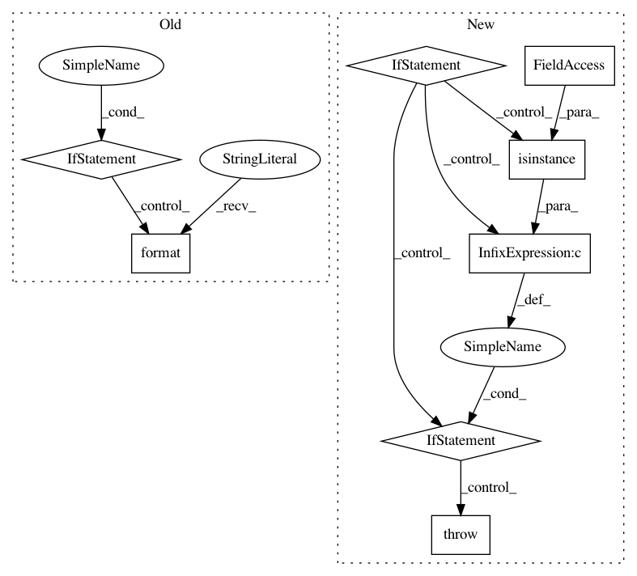

91535e910201dc403cb2b8644a75e1132bd712fe,python/ray/tune/integration/keras.py,TuneReporterCallback,__init__,#TuneReporterCallback#Any#Any#Any#,7
Before Change
self.iteration = 0
logs = logs or {}
if freq not in ["batch", "epoch"]:
raise ValueError("{} not supported as a frequency.".format(freq))
self.freq = freq
super(TuneReporterCallback, self).__init__()
def on_batch_end(self, batch, logs=None):
After Change
frequency: Union[int, List[int]] = 1,
on: Union[str, List[str]] = "epoch_end"):
if isinstance(frequency, list):
if not isinstance(on, list) or len(frequency) != len(on):
raise ValueError(
"If you pass a list for checkpoint frequencies, the `on` "
"parameter has to be a list with the same length.")
self._frequency = frequency
super(_TuneCheckpointCallback, self).__init__(on)
In pattern: SUPERPATTERN
Frequency: 3
Non-data size: 8
Instances
Project Name: ray-project/ray
Commit Name: 91535e910201dc403cb2b8644a75e1132bd712fe
Time: 2020-09-03
Author: krfricke@users.noreply.github.com
File Name: python/ray/tune/integration/keras.py
Class Name: TuneReporterCallback
Method Name: __init__
Project Name: deepmipt/DeepPavlov
Commit Name: 286a864220a00732d382a75051e11877acf13c3f
Time: 2018-01-24
Author: ol.gure@gmail.com
File Name: deeppavlov/core/models/keras_model.py
Class Name: KerasModel
Method Name: load
Project Name: deepmipt/DeepPavlov
Commit Name: 286a864220a00732d382a75051e11877acf13c3f
Time: 2018-01-24
Author: ol.gure@gmail.com
File Name: deeppavlov/core/models/keras_model.py
Class Name: KerasModel
Method Name: save